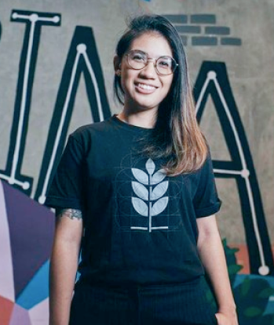
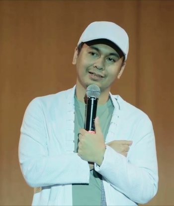
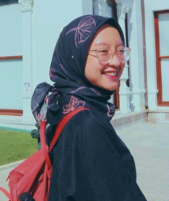
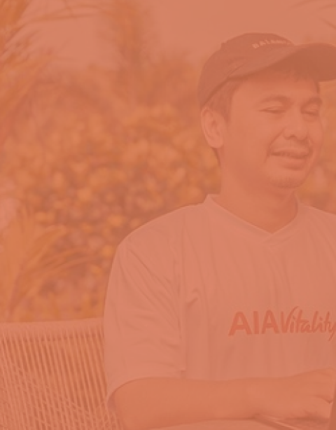
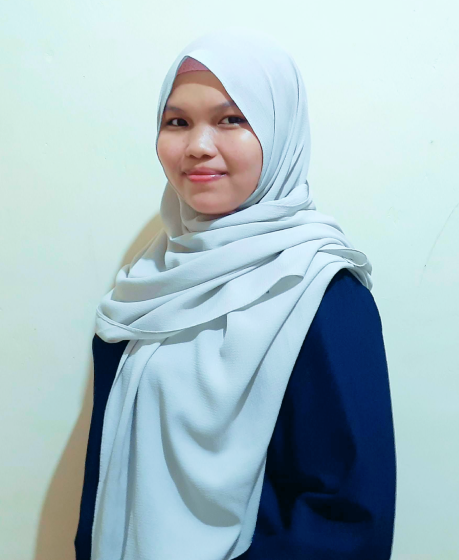

Cerita Mereka
- 
-
Alamanda Shantika
Prisident Directure Binar Academy
Alamanda shantika merupakan salah satu srikandi teknologi Indonesia yang pernah berkiprah sebagai 'emak' programer Gojek, namun ia berhenti dan mulai merintis sekolah coding dengan konsep akademi tempat anak-anak bisa belajar tentang coding secara gratis.
Disaat menempuh pendiidkan, Alamanda berkecipung pada 3 jurusan sekaligus yaitu Matematika, computer science dan desain. Alamanda juga suka menulis dan mendesain.
-
Raditya Dika
Content Creator, Penulis & Komika
Di Indonesia, Raditya Dika dikenal sebagai penulis buku-buku jenaka. Tulisan-tulisan itu berasal dari blog pribadinya yang kemudian dibukukan.
Buku pertamanya berjudul Kambing Jantan masuk kategori best seller. Buku tersebut menampilkan kehidupan Raditya Dika saat kuliah di Australia.
- 
- 
-
Gita Savitri Devi
Content Creator & Influencer
Gita pernah menulis sebuah buku berjudul Rentang Kisah dan A Cup of Tea yang diterbitkan oleh GagasMedia. Di kanal YouTube-nya, ia kerap membagikan opininya tentang berbagai isu di Indonesia maupun dunia dengan gaya bahasa untuk kalangan anak muda.
Gita menetap di Jerman untuk menyelesaikan studi Kimia Murni di Freie Universität (Free University), Berlin.
-
Alamanda Shantika Berkata
"Kita ada didunia ini untuk menerangi orang lain dan diri sendiri".
Sukses itu bukan tentang kita naik jabatan, bukan tentang kita bahagiakan diri sendiri, sukses itu tentang kita bisa membantu banyak orang.
- 
-
Raditya Dika Berakata
"Jadilah apapun yang kamu mau asal menjadi yang terbaik dibidangnya, seperti jika menjadi tukang nasi goreng maka jadilah tukang nasi goreng yang terbaik".
-
Gita Savitri Devi, Buku Rentang Kisah
“Aku sangat bangga karena aku bisa mendefinisikan sendiri apa itu kesuksesan dan kebahagiaan versi pribadi. Dan aku sudah membuktikan, kesuksesan bisa didapat, kebahagiaan bisa selalu dirasa, kalau kita tahu caranya bersyukur.”
- 
-
Kenalan, yuk
Senin dulu baru selasa, senyum dulu baru baca.
Halo, nama saya Agustina Rahman panggil saja Tina. Asal Kota Kendari. Saya seorang freelance Web Design, namun belum pro dan selalu mencoba peruntungan dengan rajin mengikuti kontes design web, disalah satu situs freelancer.
Saya masih terus belajar, untuk meningkatkan kemampuan saya. Saya memiliki skill design dan pemograman yang cukup baik. Namun, untuk pemograman sendiri saya ingin fokus belajar front-end.
Jadi, kesempatan kali ini, saya mau belajar lebih gila tentang javascript dan penggunaan Frameworknya juga. Semoga Otak saya ini bisa bekerja sama, Ammiinn